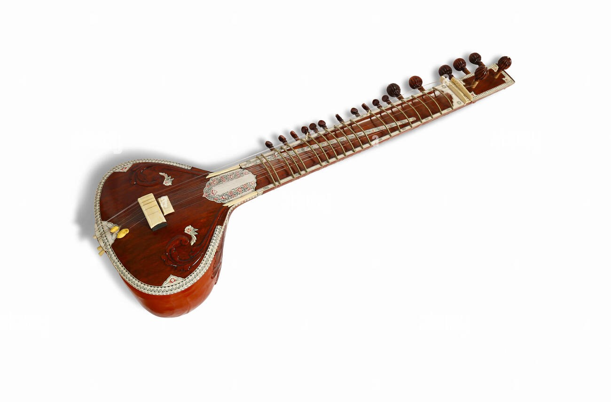
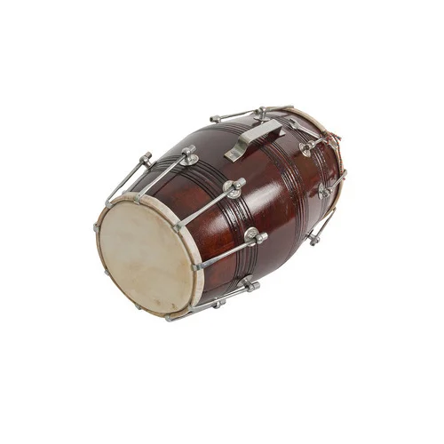
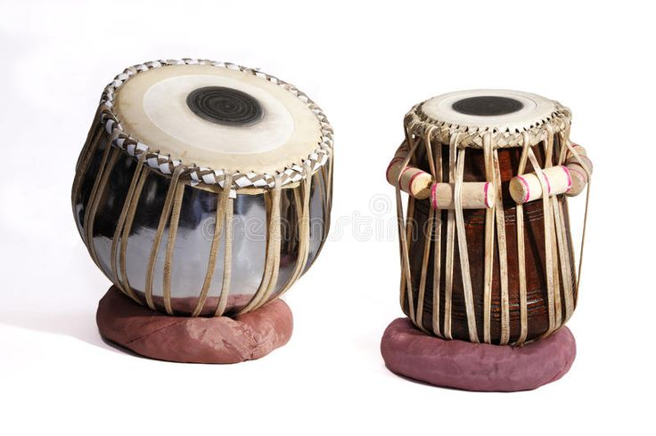

some facts about sitar instruments: It is a stringed instrument of the lute family that is popular in northern India, Pakistan, and Bangladesh. It has a pear-shaped gourd body, a long hollow neck, and 20 arched movable frets. It can have as many as 21 strings, but the first sitar only had three strings. It is played by plucking with a plectrum called the mezrab. It is over 700 years old, but its origins are unknown.

Like a violin, the sarangi is played with a bow, but unlike the violin it is held vertically with the sound chamber below. The sarangi is usually carved out of a single block of wood and its hollowed belly is covered with parchment. It typically has three main strings and sometimes a fourth string is used as a drone.

The dholak is the most commonly played musical instrument in Northern India. As accompaniment to song or other instruments, the dholak and other two-headed drums similar to it (nāl, dholki, dhol) are used all across the subcontinent in countless folk genres, devotional traditions, and family functions.

Flute Facts The flute is one of the highest-pitched instruments. In the flute family, the piccolo has the highest pitch. Throughout its history, the flute has been made of a variety of different materials, including animal bones, ivory tusks, silver, brass, nickel, glass, wood, bamboo, and plastic.

Guitar, plucked stringed musical instrument that probably originated in Spain early in the 16th century, deriving from the guitarra latina, a late-medieval instrument with a waisted body and four strings. The early guitar was narrower and deeper than the modern guitar, with a less pronounced waist.

Harmonium is a stringed instrument made of wood, metal, brass, and cloth. A kind of a portable wooden box, it was originated in West Bengal. The harmonium has thus become an integral part of Indian Music. It is extensively used to accompany folk, classical, Sufi, and ghazal compositions for both music and dance.

A tabla is a pair of hand drums from the Indian subcontinent. Since the 18th century, it has been the principal percussion instrument in Hindustani classical music, where it may be played , as an accompaniment with other instruments and vocals, or as a part of larger ensembles.

It is a long-necked, pear-shaped lute, but instead of the lower gourd of the North Indian design, it has a pear-shaped wooden piece. However it, too, has 24 frets, four melody strings, and three drone strings, and is played similarly. It remains an important and popular string instrument in classical Carnatic music.